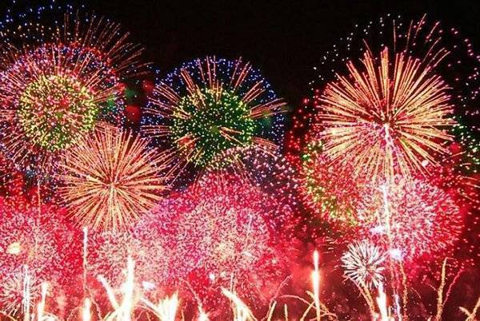
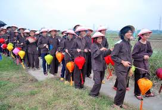
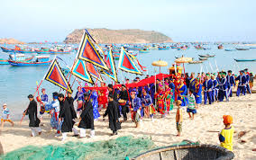
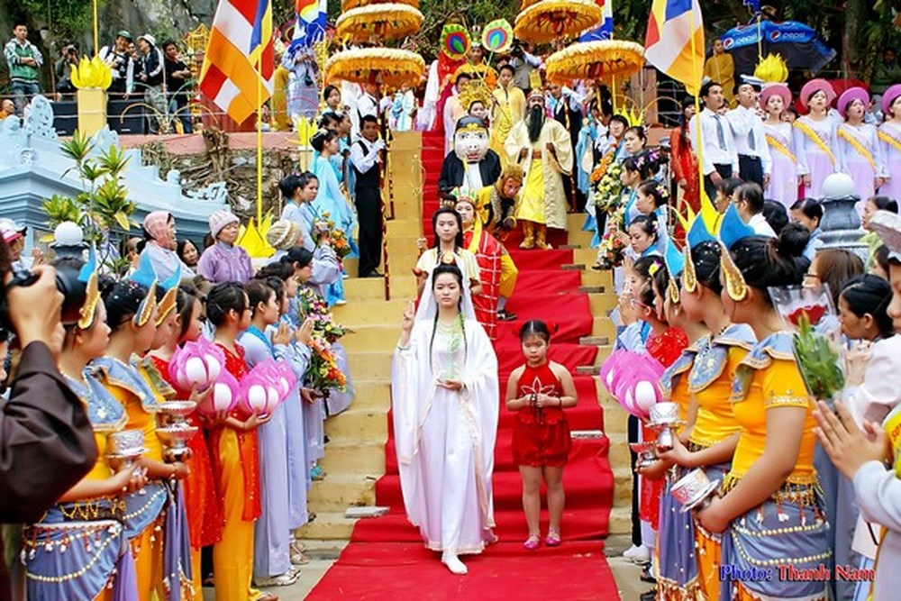

Firework Festival

Lễ hội pháo hoa Đà Nẵng hay thường được gọi là “Festival Pháo Hoa Đà Nẵng”. Lễ hội được tổ chức hàng năm vào dịp 30/4 – 1/5, đặc biệt năm nay (2017) lễ hội pháo hoa Đà Nẵng được tổ chức suốt hai tháng bắt đầu từ 29/4 đến 24/6. Pháo hoa được bắn vào 5 tối thứ 7 vào những ngày 29/4, 20/5, 27/5, 3/6 và 24/6.
Vào những ngày lễ pháo hoa, Đà Nẵng sáng rực cả một bầu trời, lung linh dưới ánh sáng rực rỡ làm cho thành phố thêm năng động, nhộn nhịp và cuồng nhiệt hơn. Hòa theo không khí rộn ràng của các đêm pháo hoa là nhiều sự kiện, lễ hội được đồng hành diễn ra như lễ hội văn hóa Chăm, lễ hội đường phố vui nhộn và không gian ẩm thực độc đáo cùng những chương trình khuyến mãi hấp dẫn…
Lễ hội pháo hoa Đà Nẵng hàng năm thu hút du khách thập phương
Địa điểm tổ chức bắn pháo hoa Đà Nẵng năm 2017 nằm ở vị trí trước khu vực cầu sông Hàn trên đường Bạch Đằng và đối diện khách sạn Novotel. Du khách có thể ngồi ở những quán cà phê đẹp ở Đà Nẵng gần sông Hàn để xem pháo hoa và trò chuyện với bạn bè.
Các loại giá vé xem pháo hoa được công bố theo quy định của UBND Đà Nẵng với giá cụ thể như sau: khán đài C3: 200.000 đồng/vé, khán đài C2: 250.000 đồng/vé, khán đài C1: 300.000 đồng/vé, B4: 400.000 đồng/vé, B3: 500.000 đồng/vé (giá tham khảo).
Muc Dong festival

Lễ rước Mục Đồng là lễ hội dành cho những đứa trẻ chăn trâu được tổ chức ở làng Phong Lệ, Hòa Châu, Hòa Vang. Lễ hội được tổ chức 3 năm một lần và diễn ra trong hai ngày cuối tháng ba âm lịch với ý nghĩa cầu mong một vụ mùa bội thu.
Lễ hội rước Mục Đồng có rất nhiều hoạt động diễn ra trong suốt hai ngày với những màu sắc rực rỡ và tình người ấm áp của những con người bình dị nơi đây. Xuyên suốt lễ hội sẽ có những trò chơi dân gian hấp dẫn, các màn trình diễn độc đáo của những đứa trẻ chăn trâu sẽ để lại ấn tượng khó quên trong lòng du khách khi đến Đà Nẵng.
Fish Wishes festival

Lễ hội Cầu Ngư hay còn được gọi là lễ hội Cá Ông (Cá Voi) là một trong những lễ hội truyền thống lớn nhất của ngư dân thành phố Đà Thành. Cá Ông là tiếng gọi tôn kính của ngư dân dành riêng cho cá voi – loài cá thường giúp đỡ ngư dân khi gặp nạn trên biển cả.
đầy ắp cá mỗi lần ra khơi. Lễ hội thường được tổ chức ở những vùng ven biển như Thái Quang, Xuân Hà, Hòa Hiệp… vào thời gian sau khi ăn Tết xong.
Pagoda festival

Lễ hội Quán Thế Âm là lễ hội dân gian mang đậm nét truyền thống tín ngưỡng tôn giáo. Lễ hội tổ chức vào ngày 17, 18, 19 tháng 2 Âm Lịch hàng năm tại núi Ngũ Hành.
Lễ hội mang ý nghĩa cầu mong Quốc thái dân an, chúng sinh an lạc, khơi dậy lòng từ bi trong mỗi con người, hướng thiện và hòa hợp giữa Phật Pháp với tình yêu quê hương đất nước. Nếu du khách đi du lịch Đà Nẵng vào giai đoạn này sẽ được tham gia vào các hoạt động văn hóa mang đậm bản sắc dân tộc như hát dân ca, thi cờ, điêu khắc, thả đền trên sông…
These are some common question about Da Nang.Why Da Nang should be chosen?This is a common question of those who are confusing in choosing their destination. Therefore, they need suggest from experienced travelers.
Let’s choose Da Nang for your forthcoming trip! These are reasons.
First, Da Nang is one of the cleanest cities of Vietnam with rapid development. Especially, Da Nang has been built as a tourism city with many natural tourist destinations like Ba Na Mountain, Son Tra peninsular, Marble Mountain, beaches, and Han River.
Traveling to Da Nang and some useful information
Besides, there are many artificial places as Fantasy Park, Ba Na hill cable car system, Asia Park, Son Tra peninsular, and some resorts such as But beach, Rang beach, Ban beach, Obama beach (a funny name of Da beach), and Hoa Phu Thanh. Moreover, a lot of bridges with beautiful and unique architectures were built as Dragon Bridge, Tran Thi Ly Bridge, and Han River Bridge. Each bridge has its own mark and is an ideal place for walking and city view.
Second, it is a safe city for tourists because tourists’ rights are always protected. Next, there is hardly traveler unsettlement, massive price rise, beggars, and robbers. There are also information offices that can enthusiastically answer tourists’ questions and provide free travel information.
Traveling to Da Nang and some useful information
Third, the accommodation systems here are very assured. Da Nang has many hotels, motels with ensure standards to serve tourists on all occasions during the year. To suit your need, you can choose hotels near Da Nang international airport, Da Nang center, beaches, and river sides. Resorts and luxury resorts with international standards are also good options.
Forth, Da Nang is located in the middle of the central Vietnam. This city is located near Hue, Hoi An, and My Son that are recognized as world cultural heritages. Arriving in Da Nang city, tourists can easily and economically go to Hoi An, Hue, and My Son.
Finally, air tickets, car tickets or train tickets are very cheap because Da Nang is in the middle of the country so travelers will pay only 50% of the whole North – South trip. Bus stations, train stations, airports are closed to the city center.
What is the most suitable way to Da Nang?
Traveling to Da Nang and some useful information
Airplane:
Da Nang is served by Vietnam Airlines, Vietjet, and Jetstar. There are also regular promotions on air tickets to Da Nang. 1 way ticket to Da Nang is usually under 1,000,000 VND. Promotional one is just about 300,000-500,000 VND. You can find cheap ticket by yourself or through local travel companies.
Train:
Da Nang gas station is located in city center. Train is the safest vehicle for tourists. In addition, travelers can not only prevent themselves from carsick but also enjoy Vietnam’s landscapes. Train tickets are really affordable and available online. In high season, ticket reservation is safe and reasonable.
Bus
City bus station is also near the center with large and spacious road. There are buses to Da Nang from all regions of Vietnam. Tourists can go online for information about bus schedules.
Backpacking travel.
It’s wonderful to ride a motor bike to Da Nang because you can both enjoy scenes and visit the down town easily. It’s safe and fun to go in a group.
Travelers can ask for vehicles in the city at accommodation reception.
What to eat in Da Nang?